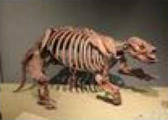

菜单
GuoKr.COM
PC
用户登录
用户注册
紫禁城的石头是怎么运进来的？
北京的人都是来干啥的？
长城上的石头是怎么搞上去的？
解读科学观点时，你应该知道的20个不为认知的秘密！
运动出点汗，更好来谈判
"关掉就习惯"本性不在难移
男女搭配，破案不累
腰窝，性感无误？
有7000多种语言，就有700000多种平衡。
久坐杀精--今天，你做了多久？
热门问答
更多
科技
生活
人文
自然
如果把探测器撞到彗星把探测器撞到彗星把探测器撞到彗星把探测器撞到彗星上会怎么样？
撞上去的事情人类已经干过了..深度撞击号(英语:Deep Impact)是美国国无缘巨鼎色发鼎色发鼎色发鼎色发鼎色发鼎色发
这个"肥皂"放入牛奶的效果怎么产生的花花内内
制造出大于全幅画的感光元件有意义么？
磁场是运动的电厂么？
什么函数能描述你的人生？
小组热帖
更多
科技
生活
人文
自然
史密森尼国家大自然历史博物馆：古脊椎动物。

好久没逛果壳了，哦然发现了Baboon老师关于NMNH的帖子因为去过很多次多疑比较喜欢！
TIL有的母蟑螂会用美色猎物将其杀害
艾森彗星T-18小时：绝地反击
【ison】我儿 老大哥在看着你
【天文每日一图】NGC1999...